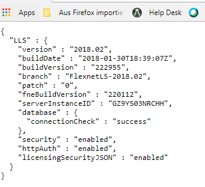
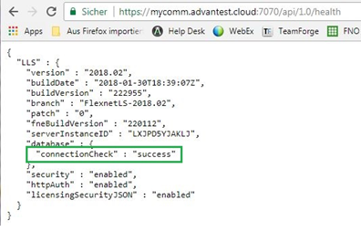
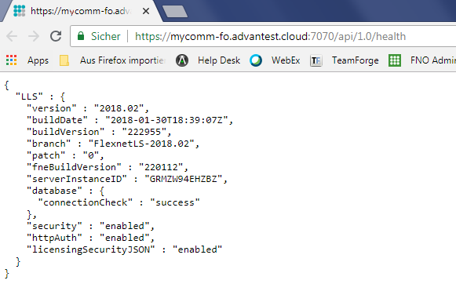

FlexNet Embedded license client setup
The FlexNet Embedded license client is required to run on the system controller (installed as default).
The FlexNet Embedded license client is installed as the default license client.
The FlexNet Embedded license client is installed as the default license client.
Information required to install, configure and administer FlexNet Embedded license clients is divided into the following areas:
- License client installation - Installation of the license client software to manage the licensing of a SmarTest software installation.
- Switching the client between FlexNet Embedded and FlexNet Publisher servers.
- License client administration - Advantest FlexNet Embedded (FNE) license client tools and their usage.
System controller prerequisites
- Red Hat Enterprise Linux version 7.2 or 7.4
- SmarTest 8.x
- The system controller fully-qualified host name
Checking the connection to a customer-hosted FNE License Server
After installing the FNE license server, check that the FNE license server is contactable from the SmarTest workstation before you start the installation of the FNE client subsystem on the SmarTest workstation.
Complete the following steps to check the connection to the FNE license server:
- Open a browser.
- Enter the URL appropriate for your FNE server arrangement:
- href="http://<fne-server-hostname>:7070/api/1.0/health
<fne-server-hostname>represents the hostname of the FNE license server to which you are testing the connection.
- href="http://<failover-fne-server-hostname>:7070/api/1.0/health
<failover-fne-server-hostname>represents the hostname of the failover FNE license server to which you are testing the connection.
If the FNE license server is contactable (port 7070 is open), the following type of output is displayed:

- href="http://<fne-server-hostname>:7070/api/1.0/health
- If port 7070 is not open, you a page with a not available message is displayed. In this case, get in contact with your administrators (customer IT) and request that port 7070 is opened for the SmarTest client workstation.
Checking the Connection to an Advantest FNE Cloud License Server
If the SmarTest client workstation needs the access to the Advantest FNE Cloud License Server, you must check ensure that the SmarTest client workstation can connect to the Advantest FNE Cloud License Server (port 7070 must be opened for the client).
The following is an example of to check the connection to the Advantest FNE Cloud License Server providing licenses for mycomm:
- Open a browser.
- Enter the URL: https://mycom.advantest.cloud:7070/api/1.0/health
If port 7070 is open, the following type of output is displayed:

If port 7070 is not open, an error message page is displayed informing of a timeout or failure to connect to the requested page. Get in contact with your administrators (customer IT) and request that port 7070 is opened.
- The Advantest FNE Cloud License Server is a failover system. If the connection to the
Advantest primary FNE Cloud License Server
(https://mycomm.advantest.cloud:7070/api/1.0/health) works, please also
check the connection to the failover system:
Enter URL: https://mycomm-fo.advantest.cloud:7070/api/1.0/health
Note If you need to access a different Advantest FNE Cloud License server (the failover system has a different hostname to the primary Advantest FNE Cloud License server), you must change the hostname in the URL accordingly:https://<hostname-fo>.advantest.cloud:7070/api/1.0/health
- If port 7070 is open, the following type of output is displayed, signifying that
connection to the Advantest FNE Cloud Failover License Server is also possible:

- If the connection to the failover system does not work, get in contact with your administrators (customer IT) and request that port 7070 is opened to allow connection to the mycom-fo.advantest.cloud cloud license server.
Checking the date and time settings
It is important to have the correct date and time set on the workstations and license servers. The Network Time Protocol (NTP) can be used to synchronize the clocks of computers with a reference time source over a network. For details on how to synchronize the date and time settings using NTP, see Network time protocol configuration.
Next steps
If the prerequisites are met, start the installation of the License client as described in:
Functional changes
- Introduced in SmarTest 8.1.1
- SmarTest 8.2.1: Enhanced with connectivity checks.